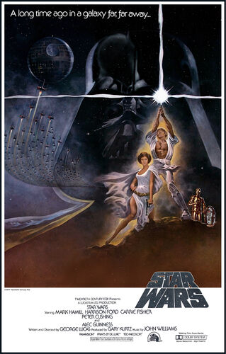

Liste des films de la Guerre des étoiles
-1-
La menace fantome
-2-
L'attaque des clones
-3-
La revanches des Sith
-4-
Un nouvel espoir

-5-
L'empire contre-attaque
-6-
Le retour du jedi
-7-
Le réveil de la force
-8-
Les derniers jedi